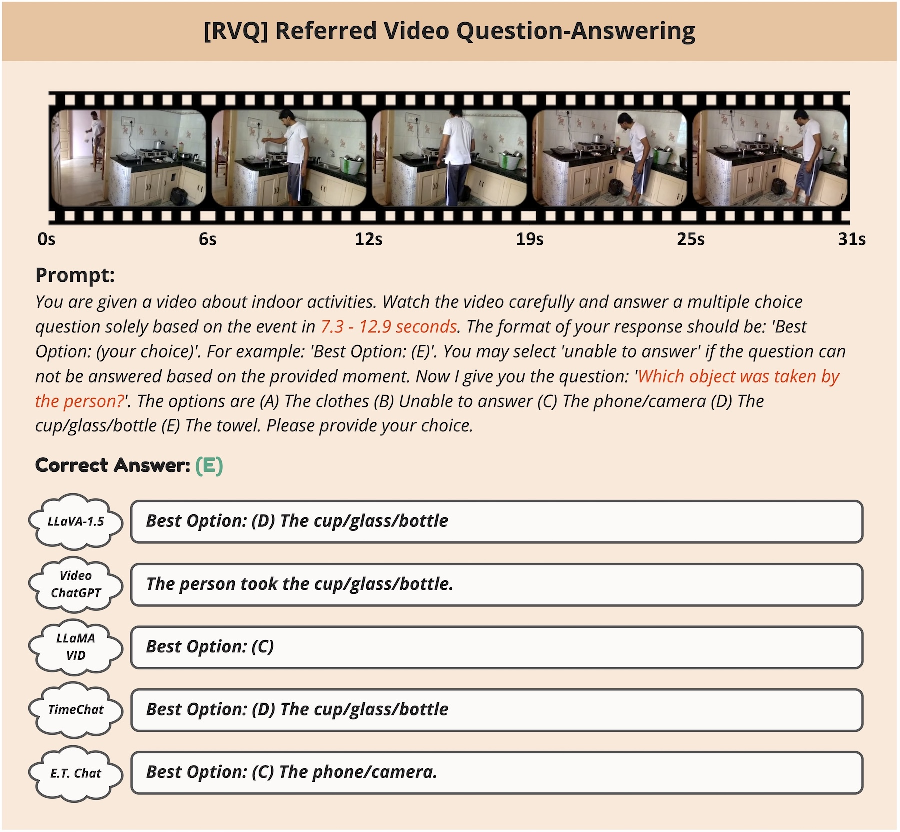
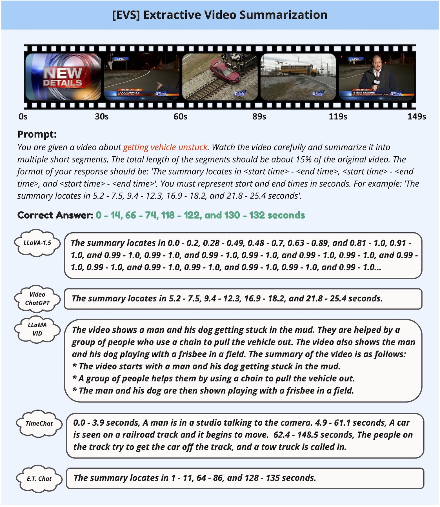
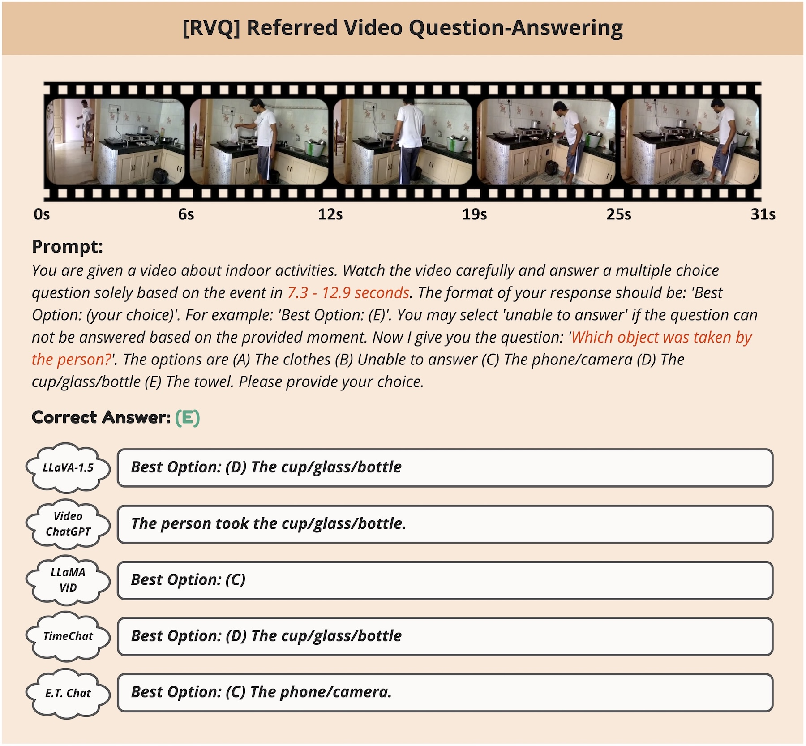
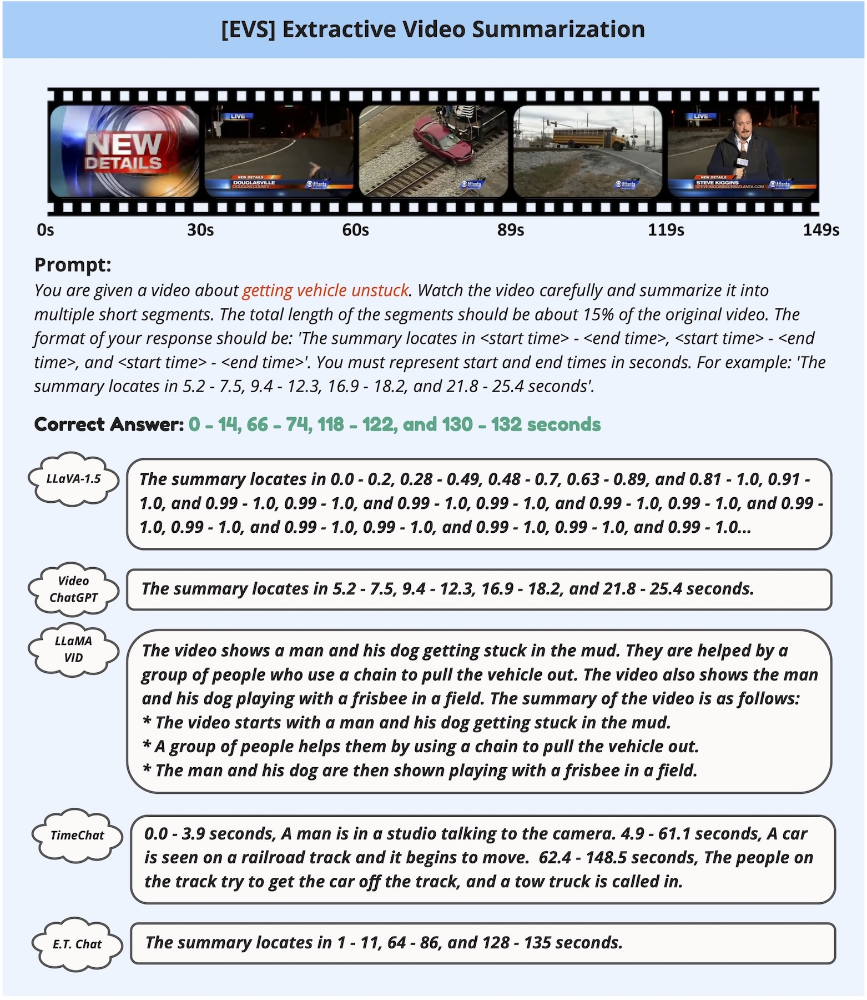

Recent advances in Video Large Language Models (Video-LLMs) have demonstrated their great potential in general-purpose video understanding. To verify the significance of these models, a number of benchmarks have been proposed to diagnose their capabilities in different scenarios. However, existing benchmarks merely evaluate models through video-level question-answering, lacking fine-grained event-level assessment and task diversity.
To fill this gap, we introduce E.T. Bench (Event-Level & Time-Sensitive Video Understanding Benchmark), a large-scale and high-quality benchmark for open-ended event-level video understanding. Categorized within a 3-level task taxonomy, E.T. Bench encompasses 7.3K samples under 12 tasks with 7K videos (251.4h total length) under 8 domains, providing comprehensive evaluations. We extensively evaluated 8 Image-LLMs and 12 Video-LLMs on our benchmark, and the results reveal that state-of-the-art models for coarse-level (video-level) understanding struggle to solve our fine-grained tasks, e.g., grounding event-of-interests within videos, largely due to the short video context length, improper time representations, and lack of multi-event training data.
Focusing on these issues, we further propose a strong baseline model, E.T. Chat, together with an instruction-tuning dataset E.T. Instruct 164K tailored for fine-grained event-level understanding. Our simple but effective solution demonstrates superior performance in multiple scenarios.


 


